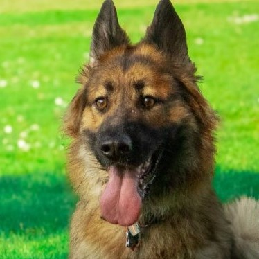
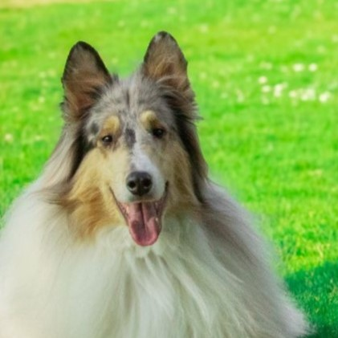

This is some text, which is the main part of this page. It might have some images in, near, or around it. This is a website about dogs, and dog training, and how to talk to your dog. Every dog has something to say - are you listening? Do you know what to listen for? Does your dog know you're listening? What are they saying, and how are they saying it, and when do they stop trying?
This is some more text - which may, or may not, include some more images in it. This page isn't supposed to be focused on images, but is going to have a couple images. Flashy ones, of my flashy dogs. Druid is the fanciest dog, but Hazel is pretty dang flashy. Not as flashy as a tobiano paint, but alas, my dogs are but pintos. Barely even beans, if you ask me.
